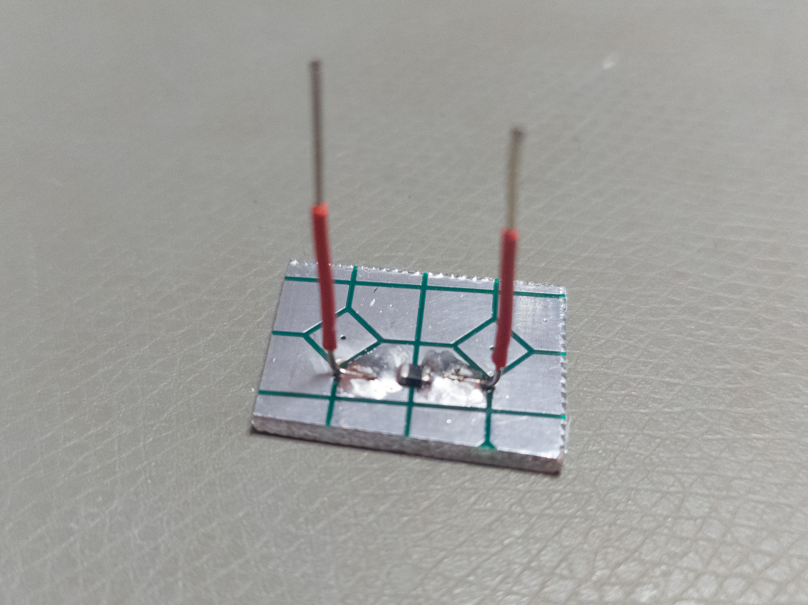
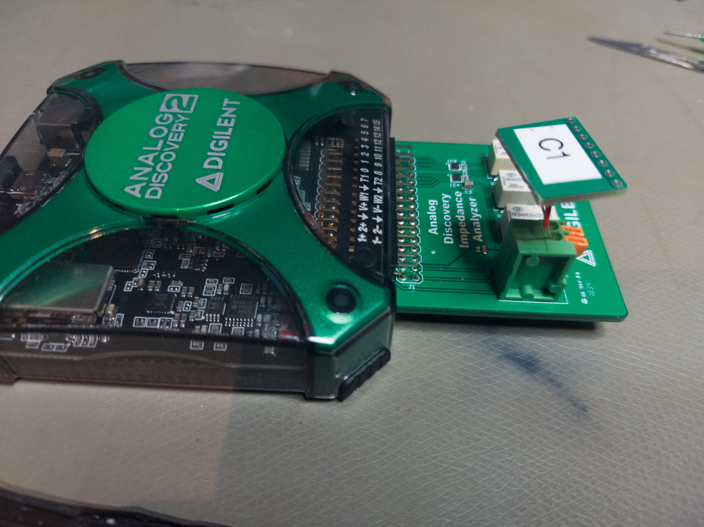

I am testing some components that I plan to put into the 0dBm reference
for which I now have an untested PCB.
I have the Digilent Analog discovery connected by USB and the “Impedance
Analyzer” adapter. The components are soldered to small adapters with
short leads soldered to fit into the analyzer adapter.f

Test fixture for smd capacitors and inductors

Test fixture in the Analog Discovery with the impedance analyzer
4 capacitors
For DC-blocking in the 0dBm 10MHz reference, I have designed with 100nF
capacitors (because I have a lot of them). But the quality of capacitors
this large is not the same that you can get at lower capacitances, my
capacitors at 100nF are either X7R or Y5-something (from a parts-kit).
So my capacitors are (all 100nF):
- C1: Samsung
CL21B104KBNE,
X7R, +/- 10%, 50V, 0805
- C2: From an AIDETEK kit, X7R, +/- 10%, 50V, 0805
- C3: From an AIDETEK kit, Y5?, +/- 20%, 50V, 0805
- C4: Wurth,
885012207098,
X7R, +/- 10%, 50V, 0805
I graph the impedance of the different parts

The resonances (lowest impedance) are at:
| part |
frequency_hz |
impedance |
| C1 |
7491782 |
0.008438432 |
| C2 |
6770266 |
0.024338478 |
| C3 |
5757563 |
0.016789185 |
| C4 |
7801478 |
0.011732717 |
So the Aidetek parts are clearly not as good. That the Y5 capacitor is
worse is no surprise, but the X7R are also worse than the Wurth and Samsung parts.
But for DC-blocking, they all seem ok. Here are the impedances at about 10MHz:
| part |
impedance |
| C1 |
0.1275677 |
| C2 |
0.1830315 |
| C3 |
0.3039850 |
| C4 |
0.1447502 |
3 Inductors
The low pass filter is a 7-th order Chebyshev filter intended to sit at 10.5MHz,
and it relies on 1uH inductors. I have three different candidates:
- L1: Kemet L0805C1R0KSMST, Shielded, Surface Mount Inductor, Ceramic Multilayer (0805).
- L2: TDK MLZ2012A1R0WT000, Multilayer Ferrite (0805).
- L3: A 1uH from an ebay sample book (0805).

Looking more closely at the values at higher frequencies, let’s
look at the differences in impedance from an ideal inductor (which has
\(X_L = 2\pi f L\)).

Here it is clear that there is a difference between the parts. The Kemet
inductor (L1) is much better into the tens of MHz. The L2 (TDK) is made
more to work as a Ferrite bead on power lines and such, and it is
perhaps not so bad. The 1uH from the ebay sample book (L3) does not
look as good.